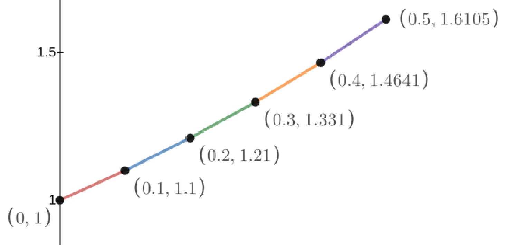
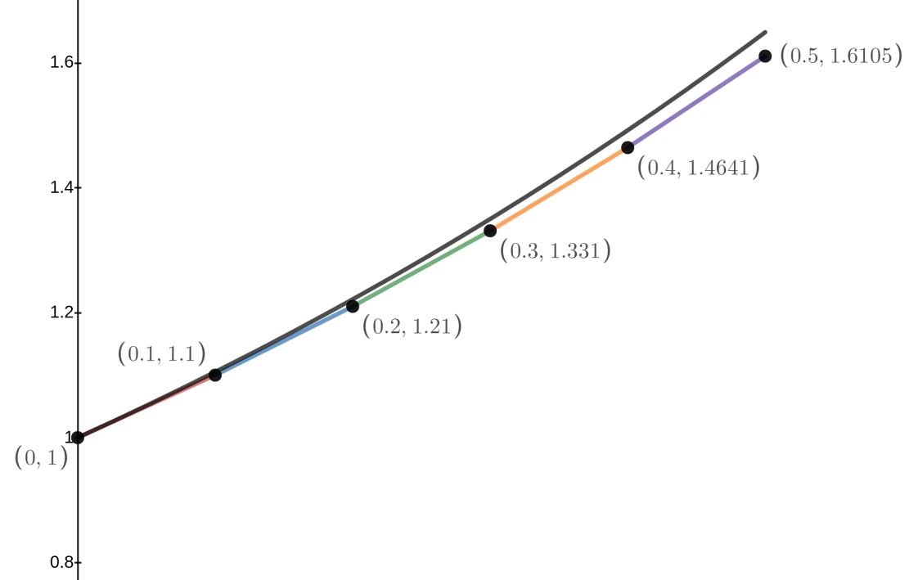
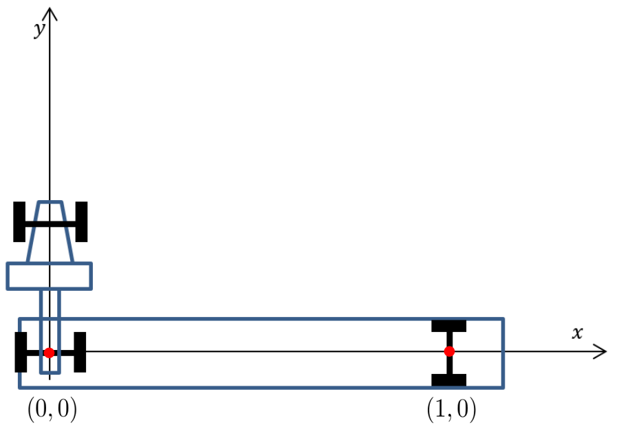
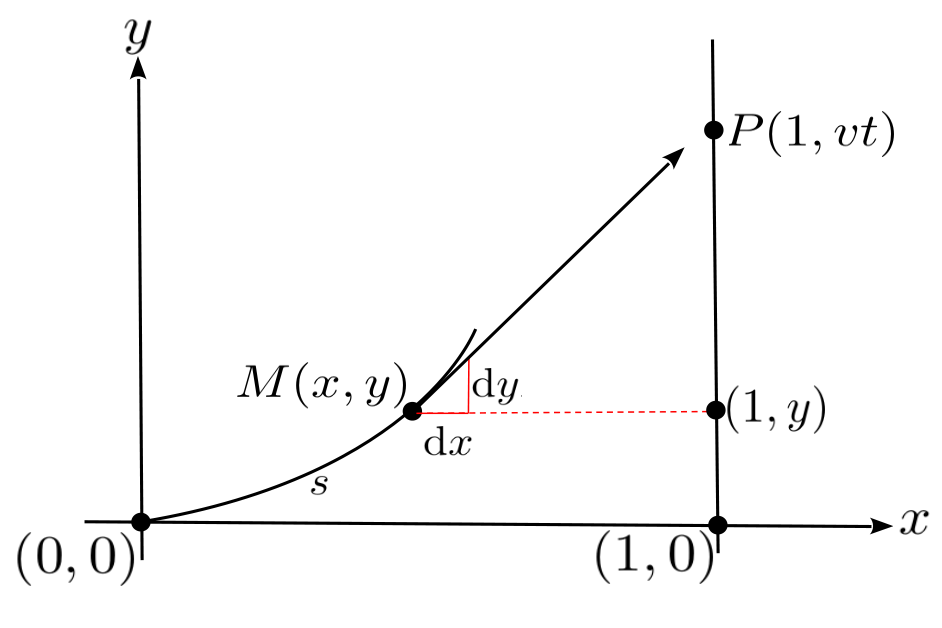

Suppose \(B\) is a point on the graph of an unknown function \(y(x)\) (in green in the sketch above). Suppose further that if the line tangent to the graph at \(B\) (in red) crosses the \(x\)–axis at \((a, 0)\) as shown.
We wish to address the following question: “Is there a curve which passes through the point \((0,
1)\) with the property that the distance from \(A\) to \(C\) is equal to \(1\) regardless of the location of \(B\) on the graph.”
At \(B\) form the differential right triangle with the infinitesimal vertical displacement \(\dx{y}\) and the infinitesimal horizontal displacement \(\dx{x}\text{,}\) as shown. Then the right triangle with sides of length \(y\) and \(1\) is proportional to the differential triangle. By the properties of proportional triangles this curve must satisfy the differential equation: \(\dfdx{y}{x} = y\text{.}\)
Since we specified that the curve must pass through the point \((0, 1)\) we see that we need to find a function \(y(x)\) that satisfies the following two conditions:
\begin{align}
\dfdx{y}{x} = y, \amp{}\amp{}\text{and}\amp{}\amp{} y(0)=1.\tag{7.6}
\end{align}
A problem like the one stated in Formula (7.6) is called an Initial Value Problem (Ivp). We will give a formal definition below (Definition 7.3.1).
We do not know a formula for \(y(x)\) which will satisfy IVP (7.6), nor do we have the tools to find such a formula, yet. We will return to this question in Chapter 8 where we will solve IVP (7.6)) exactly. For the moment we will be satisfied if we can find an approximate graph of the solution. That will give us a general sense of its shape.
The initial value in IVP (7.6)) shows that the curve passes through the point \((0,1)\text{.}\) From the differential equation in IVP (7.6)) we see that
which means that the curve passes through the point \((0,1)\) with a slope equal to \(1\text{.}\) So the equation of the line tangent to our curve is
\begin{equation*}
y-1=\underbrace{\left[\dfdxat{y}{x}{0}\right]}_{=y(0)=1}(x-0)
\text{ or }
y=x+1.
\end{equation*}
This is not a lot to work with, but let’s not set our sights too high.
By the Principle of Local Linearity , the line tangent to the curve and the curve itself are going to be nearly indistinguishable near to the point \((0,1)\text{.}\) Moreover, we can find any point on the tangent line since we have its equation. If we increment the \(x\)–coordinate just a little bit while staying on the tangent line then the corresponding \(y\)–coordinate on the tangent line will be close to the \(y\)–coordinate on the curve. So we can use the \(y\)–coordinate on the tangent line (which we know) to approximate the \(y\)–coordinate on the curve (which we don’t know).

Let’s say we increase \(x\) by \(0.1\) so that \(x=0.1\text{.}\) The \(y\)–coordinate on the line tangent to the curve at \(x=0.1\) is \(1.1\) (since the equation of our tangent line is \(y=x+1\)).
We now have two points. The point \((0,1)\) is on the curve. The point \((0.1, 1.1)\) isn’t on the curve, but it’s close. Remember we’re only trying to approximate the curve. Connecting these with a straight line we have the red segment on the graph above. So far, so good.
Next we increment \(x\) by \(0.1\) again, to \(x=0.2\text{.}\) We would really like to have the equation of the line tangent to the curve at \((0.1, y(0.1))\) but we simply have no way to obtain it. All we have is the point \((0.1, 1.1)\text{.}\) But we know that \(y(0.1)\approx1.1\) so the differential equation from IVP (7.6)) tells us that \(\eval{\dfdx{y}{x}}{x}{0.1}\approx1.1\) also. Thus we see that the curve will pass (approximately) through the point \((0.1,
1.1)\) with slope (approximately) equal to \(1.1\text{.}\) Therefore the equation of the line tangent to the curve at (approximately) \((0.1, 1.1)\) will be \(y-1.1=1.1(x-0.1)\) and as long as we don’t move too far the Principle of Local Linearity guarantees that this line and the curve we seek are close together. So we use the blue line segment from \((0.1,
1.1)\) to \((0.2, 1.21)\) in our figure above to approximate the curve on the interval \((0.1, 0.2)\text{.}\)
We now repeat this process to compute the points:\((0.3,1.331)\text{,}\)\((0.4,1.4641)\text{,}\)\((0.5,1.61051)\text{,}\) and so on. Plotting these points and connecting them with straight line segments gives us the rest of the sketch above.
At each step we use the previous approximation to compute the next, so it would be miraculous if we actually found exactly the points on the graph of our curve. But it should be clear that the curve we’ve drawn will at least resemble the desired curve, as long as we don’t stray too far from our initial point \(x=0\text{.}\) The sketch below shows our approximation and the actual solution on the same set of axes.

The solution of this particular IVP turns out to be incredibly useful in mathematics, theoretical physics, engineering, and science and technology in general. We will be revisiting it in the next chapter.
The procedure we have just outlined is known as Euler’s Method; named for the great eighteenth century mathematician Leonhard Euler. For now we’ll focus on how to use Euler’s Method to find an approximate solution of an arbitrary Initial Value Problem.
We define an Initial Value Problem formally as follows.
Definition7.3.1.Initial Value Problem (IVP).
An Initial Value Problem is a differential equation of the form
Don’t let the formalism of this definition scare you. All it says is that at every point \((x,y)\) the slope of \(y(x)\text{,}\)\(\left( \text{that is, } \dfdx{y}{x}\right)\text{,}\) is given by some formula, \(f(x,y)\text{,}\) which may involve both \(x\) and \(y\text{.}\) And that at a particular value of \(x\) (specifically, at \(x=x_0\)) we know the value of \(y\text{:}\)
So if we choose \(x_1\) very close to \(x_0\) and compute \(y_1=y_0+f(x_0,y_0 )(x_1-x_0 )\) then \((x_1,y_1)\) would be approximately on the curve. In this way we can generate a sequence of points \((x_0,y_0 ), (x_1,y_1 ), (x_2,y_2 ), (x_3,y_3 ),\cdots\) which are approximately on the curve. Connecting them with straight line segments should provide an approximate graph of the curve.
At each iteration the value of \(y\) has been approximated, so the next approximation is probably not as good. Thus, as we move further from our initial value \((x_0, y_0)\) our approximation probably deviates further away from the actual curve. However, near to the initial value, \((x_0,y_0)\) we should have a reasonable approximation to the curve \(y=y(x)\text{.}\) The next two problems demonstrate this.
Use Euler’s Method on this IVP to complete the table. Then plot the points you generated and the graph of \(y=\sin(x)\) on the same set of axes so you can compare them.
Use Euler’s Method on this IVP to complete the following table. Then plot the points you generated and the graph of \(y=\cos(x)\) on the same set of axes so you can compare them.
Use Euler’s Method to approximate the solutions of the given IVPs by constructing a table like the ones in Problems 7.3.3and 7.3.4. Then plot the points you found, connecting them with straight line segments.
(a)
\(\dfdx{y}{x}=y^2,\ \ \ y(0)=1\)
(b)
\(\dfdx{y}{x}=y^3,\ \ \ y(0)=1\)
(c)
\(\dfdx{y}{x}=y^4,\ \ \ y(0)=1\)
(d)
\(\dfdx{y}{x}=y^5,\ \ \ y(0)=1\)
Problem7.3.6.
Use Euler’s Method to approximate the solutions of the given IVPs by constructing a table like the ones in Problems 7.3.3and 7.3.4. Then plot the points you found, connecting them with straight line segments.
(a)
\(\dfdx{y}{x}=\frac{1}{y},\ \ \ y(1)=1\)
(b)
\(\dfdx{y}{x}=\frac{1}{y^2},\ \ \ y(1)=1\)
(c)
\(\dfdx{y}{x}=\frac{1}{y^3},\ \ \ y(1)=1\)
(d)
\(\dfdx{y}{x}=\frac{1}{y^4},\ \ \ y(1)=1\)
Problem7.3.7.
Use Euler’s Method to approximate the solutions of the given IVPs by constructing a table like the ones in Problems 7.3.3and 7.3.4. Then plot the points you found, connecting them with straight line segments.
(a)
\(\dfdx{y}{x}=xy,\ \ \ y(0)=1\)
(b)
\(\dfdx{y}{x}=x^2y,\ \ \ y(0)=1\)
(c)
\(\dfdx{y}{x}=xy^2,\ \ \ y(0)=1\)
(d)
\(\dfdx{y}{x}=x^2y^2,\ \ \ y(0)=1\)
(e)
\(\dfdx{y}{x}=\frac{x}{y},\ \ \ y(1)=1\)
(f)
\(\dfdx{y}{x}=\frac{x^2}{y},\ \ \ y(1)=1\)
(g)
\(\dfdx{y}{x}=\frac{x}{y^2},\ \ \ y(1)=1\)
(h)
\(\dfdx{y}{x}=\frac{x^2}{y^2},\ \ \ y(1)=1\)
(i)
\(\dfdx{y}{x}=\frac{x^2}{y^2},\ \ \ y(1)=2\)
Problem7.3.8.

Consider the top view of a tractor–trailer as it turns, as shown above. Initially, the center of the rear axle of the tractor is at the origin and the center of the rear axle of the trailer is at the point \((1,0)\text{.}\) The tractor pulls the front wheels vertically up the \(y\)–axis and we assume that the rear wheels don’t slip. The path that the center of the rear axle follows is called a tractrix from the Latin verb trahere, meaning “to drag or pull.”
(a)
Show that the tractrix must satisfy the Initial Value Problem
Plot the points obtained in part b to see if this looks like the path the rear axle of the trailer would take.
Problem7.3.9.

Suppose a rocket \(R\) travels up the line \(x=1\) at a constant speed \(v\text{.}\) As the rocket passes through the point \((1,0)\text{,}\) a missile \(M\) is fired from the origin directly at the rocket. Assume that the missile travels at a speed which is \(\frac32\) times the speed of the rocket and is always aimed directly at the rocket. At time \(t\) the missile is at the point \(M(x,y)\) and the rocket is at the point \(R(1,vt)\) We want to find the path the missile will follow. The diagram above shows the situation at time \(t\text{.}\)
(a)
Find \(s\) if \(s\) denotes the length of the the missile’s path at time \(t\text{.}\)